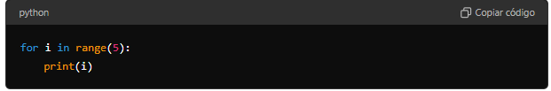
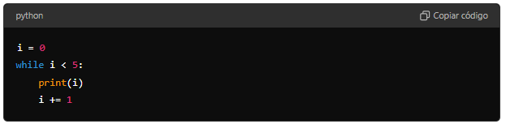
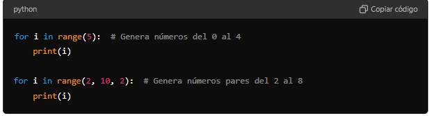

CONCEPTOS TEÓRICOS
BUCLES FOR Y WHILE
Bucle for: Se usa para iterar sobre una secuencia (como una lista, una tupla, un diccionario, un conjunto o una cadena).
Iterar significa repetir un proceso o una serie de instrucciones varias veces, generalmente sobre cada elemento de una colección o secuencia de datos, como una lista, una tupla, un diccionario, un conjunto o una cadena de caracteres. ellos.

Bucle while: Se repite mientras una condición sea verdadera.

EUSO DE LA FUNCIÓN range()
La función range() devuelve una secuencia de números, comenzando desde 0 de forma predeterminada, e incrementando en 1 (por defecto), y se detiene antes de un número especificado.
